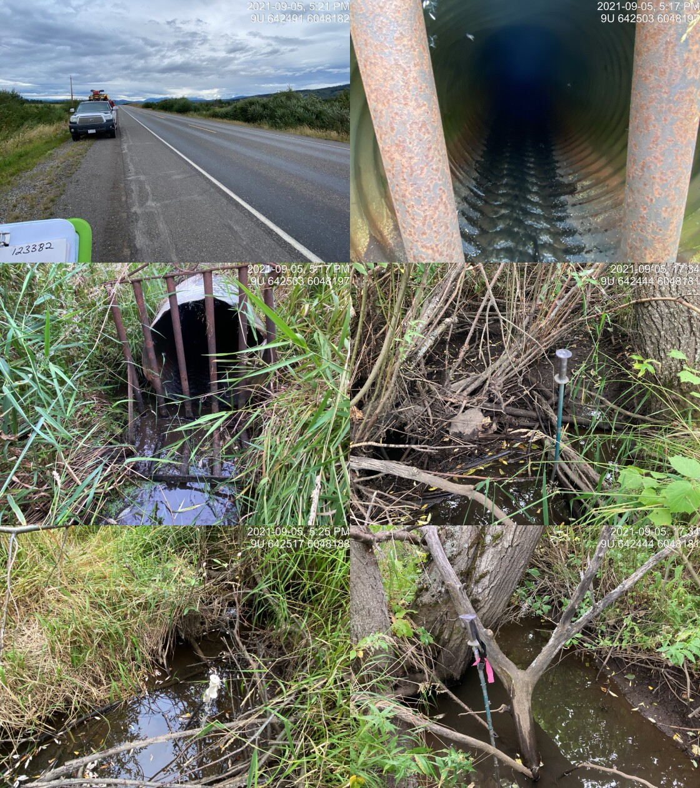

Thompson Creek - 198066 & 123377 & 123375 - Appendix
Site Location
Midway between Telkwa and Houston, PSCIS crossings 198066, 123377, and 123375 are located on Thompson Creek. Crossing 198066 was located on a small private road, approximatley 0.1km upstream from the confluence with a side channel of the Bulkley River. Crossing 123377 was located on Walcott Road 2.4km upstream of the confluence with the Bukley River, and 123375 was located on Highway 16 approximately 1.7km upstream of Walcott Road. Crossing 198066 was on private land owned by Jeremy Rouw with hay fields as well as Udder View Dairy Farm located upstream of the crossing. Crossings 123377 and 123375 are the responsibility of the Ministry of Transportation and Infrastructure and have chris_culvert_ids of 2078026 and 123375 respectively. Upstream of Highway 16 approximately 4.6km, PSCIS culverts 123382 are located on the Thompson Creek mainstem on McNeil Road adjacent to private land. On the mainstem, a further 2.5km upstream and 375m downstream of Fishpan Lake a bridge (PSCIS 123383) is located on an unnamed road.
Background
At crossing 198066, Thompson Creek is a fourth order stream with a watershed area upstream of the crossing of approximately 43.1km2. The elevation of the watershed ranges from a maximum of 1623m to 596m near the crossing (Table 5.85). Upstream of crossing 198066, cutthroat trout, coastal cutthroat trout, coho salmon, rainbow trout, and dolly varden have previously been recorded (MoE 2020b; Norris 2020). A total of 38ha of lake and 44ha of wetland are modelled upstream. This includes the 12.2ha Fishpan Lake, which drains into Thompson Creek. It is important to note that freshwater atlas mapping of the Thompson Creek drainage is not correct. Although in the freshwater atlas, the Thompson Creek mainstem is mapped incorrectly as flowing under the highway at PSCIS crossing 123375, the majority of flow from Thompson Creek actually drains under Highway 16 through an open bottomed structure (PSCIS 123376) located approximately 925m to the north of Highway 16 culvert 123375. G. Tamblyn and Jessop (2000) have documented detailed fish habitat, riparian and channel assessment data for Reach 1 and 2 of the stream surveying 12.6km along with an impact synopsis and restoration suggestions.
Landowners adjacent to the stream at crossings 198066 and 123377 reported that Thompson Creek was historically redirected from its original path on the height of land near the Bulkley River within the last 100 years. The historic dominant stream path was reported as flowing towards the Bulkley River in a north-eastern direction after emerging from the Thompson Creek valley outlet. At the time of 2021 and 2022 surveys, the channel flowed from the valley outlet to an oxbow of the Bulkley River within two separate paths that flowed initially in south and south-east directions, and then in a primarily western direction. These channels appeared to terminate within excavated trenched areas cut to help drain the hay field adjacent to the stream. The landowner noted that fish stranding has been observed within the western most excavated channel. Figure 5.109 shows a digital elevation model built from lidar available from the BC Government. The model shows there is elevation relief in a northern direction from where the Thompson Creek valley meets the Bulkley River floodplain. Additionally, evidence of extensive machine ditching to prevent the channel from flooding the agricultural fields that are on the floodplain of the Bulkley River as well as potentially to drain the water that may seasonally inundate wetland type areas to the south can be seen in the imagery.
Landowners that resided adjacent to the stream and Walcott Road reported that the crossing at Walcott Road had nearly washed out at the road several years ago due to high flows related to beaver dam failures. Crossing 123378 has been recorded as a bridge on Thompson Creek on the BC Hydro powerline between the floodplain of the Bulkley River and Walcott Road (M. C. Gollner and Cain 2014). The landowners adjacent to the stream report this bridge washed out at the time of the beaver dam failure upstream and was replaced by BC Hydro in 2020.
In addition to surveys conducted at the three subject culverts in 2021, Thompson creek was re-visited in 2022 with a survey conducted within the wetted channel in a downstream direction from the replaced bridge (crossing 123378) on the BC Hydro powerline to where the stream directs to the south and the agricultural fields begin. Surveyors also walked the north edge of the field towards the Bulkley River for approximately 250m then circled back south through the shrub dominated areas to the hay fields to scope for evidence that a defined historic channel was located in this area. Although some low lying areas were observed, no defined channel was located which is not surprising since this area is all within the floodplain of the Bulkley River, so channels/wetland complexes would historically be present in this area and shift throughout the floodplain based on beaver activity and flows in both Thompson Creek and side channels of the Bulkley River.
fpr::fpr_table_wshd_sum(site_id = my_site) %>%
select(-`Elev Min`) %>%
fpr::fpr_kable(caption_text = paste0('Summary of derived upstream watershed statistics for PSCIS crossing ', my_site, '.'),
footnote_text = 'Elev P60 = Elevation at which 60% of the watershed area is above',
scroll = F)| Site | Area Km | Elev Site | Elev Max | Elev Median | Elev P60 | Aspect |
|---|---|---|---|---|---|---|
| 198066 | 43.1 | 548 | 1623 | 832 | 802 | WSW |
| * Elev P60 = Elevation at which 60% of the watershed area is above |

Figure 5.109: Digital elevation model showing Thompson Creek and the Bulkley River floodplain. Note the anthroprogenic trenching of areas adjacent to the hay fields just west of PSCIS 198066 and the general decending slope of the height of land from south to north and from east to west from the outlet of the Thompson Creek valley.
PSCIS stream crossing 123377 was ranked as a high priority for follow up by Irvine (2018) and Smith (2018) because of the relatively large size of the stream and habitat rated as high value in PSCIS (Table 5.86. PSCIS stream crossing 123375 was ranked as a high priority for follow up by Irvine (2018) because it was prioritized by (Wilson and Rabnett 2007). A map of the watershed is provided in map attachment 093L.114.
| Habitat | Potential | Remediation Gain | Remediation Gain (%) |
|---|---|---|---|
| ST Network (km) | 35.9 | 2.4 | 7 |
| ST Lake Reservoir (ha) | 12.6 | 0.0 | 0 |
| ST Wetland (ha) | 24.6 | 0.0 | 0 |
| ST Slopeclass03 Waterbodies (km) | 1.9 | 0.0 | 0 |
| ST Slopeclass03 (km) | 12.1 | 1.6 | 13 |
| ST Slopeclass05 (km) | 4.8 | 0.8 | 17 |
| ST Slopeclass08 (km) | 7.6 | 0.0 | 0 |
| ST Spawning (km) | 4.9 | 0.0 | 0 |
| ST Rearing (km) | 15.4 | 2.4 | 16 |
| CH Spawning (km) | 4.9 | 0.0 | 0 |
| CH Rearing (km) | 12.7 | 2.4 | 19 |
| CO Spawning (km) | 9.7 | 2.4 | 25 |
| CO Rearing (km) | 14.7 | 2.4 | 16 |
| CO Rearing (ha) | 12.3 | 0.0 | 0 |
| SK Spawning (km) | 0.0 | 0.0 | – |
| SK Rearing (km) | 0.0 | 0.0 | – |
| SK Rearing (ha) | – | 0.0 | – |
| All Spawning (km) | 9.7 | 2.4 | 25 |
| All Rearing (km) | 16.7 | 2.4 | 14 |
| All Spawning Rearing (km) | 16.7 | 2.4 | 14 |
| * Model data is preliminary and subject to adjustments. |
Stream Characteristics at Crossings
Although, at the time of the survey, PSCIS crossing 198066 on the private road near the Bulkley River was 95% backwatered and appeared passable to all life stages and species, it was un-embedded and ranked as a potential barrier to upstream fish passage according to the provincial protocol (MoE 2011b). There was rip rap placed around the culvert inlets and outlets (Table 5.87).
PSCIS crossing 123377 on Walcott Road was un-embedded, non-backwatered and ranked as a barrier to upstream fish passage (Table 5.88). Water temperature was 13\(^\circ\)C, pH was 8.2 and conductivity was 294uS/cm.
PSCIS crossing 123375 on Highway 16 was un-embedded, 50% backwatered and ranked as a barrier to upstream fish passage (Table 5.89).
| Location and Stream Data |
|
Crossing Characteristics | – |
|---|---|---|---|
| Date | 2021-09-12 | Crossing Sub Type | Round Culvert |
| PSCIS ID | 198066 | Diameter (m) | 1.3 |
| External ID | – | Length (m) | 6 |
| Crew | AI | Embedded | No |
| UTM Zone | 9 | Depth Embedded (m) | – |
| Easting | 640243.9 | Resemble Channel | No |
| Northing | 6048061 | Backwatered | Yes |
| Stream | Thompson Creek | Percent Backwatered | 95 |
| Road | Private Road | Fill Depth (m) | 0.2 |
| Road Tenure | Unclassified | Outlet Drop (m) | 0 |
| Channel Width (m) | 2.77 | Outlet Pool Depth (m) | 0.1 |
| Stream Slope (%) | 0.5 | Inlet Drop | No |
| Beaver Activity | No | Slope (%) | 0.4 |
| Habitat Value | High | Valley Fill | Deep Fill |
| Final score | 16 | Barrier Result | Potential |
| Fix type | Replace with New Open Bottom Structure | Fix Span / Diameter | 10 |
Photos: From top left clockwise: Road/Site Card, Barrel, Outlet, Downstream, Upstream, Inlet.
|
|||
| Comments: Udder View Farm. Curently appears passable for all life stages and species but may present slight barrier at time of year when flow are high. Large outlet pool indicates that culvert is undersized. Landowners adjacent to the stream report that the channel was historically relocated through the fields near the river and they would like to work together to relocate. 16:48 |
| Location and Stream Data |
|
Crossing Characteristics | – |
|---|---|---|---|
| Date | 2021-09-05 | Crossing Sub Type | Round Culvert |
| PSCIS ID | 123377 | Diameter (m) | 1.05 |
| External ID | – | Length (m) | 29 |
| Crew | AI | Embedded | No |
| UTM Zone | 9 | Depth Embedded (m) | – |
| Easting | 641632.6 | Resemble Channel | No |
| Northing | 6049398 | Backwatered | No |
| Stream | Thompson Creek | Percent Backwatered | – |
| Road | Walcott Road | Fill Depth (m) | 1.5 |
| Road Tenure | MoTi Local | Outlet Drop (m) | 0.25 |
| Channel Width (m) | 4.8 | Outlet Pool Depth (m) | 0.3 |
| Stream Slope (%) | 2.7 | Inlet Drop | No |
| Beaver Activity | No | Slope (%) | 3 |
| Habitat Value | High | Valley Fill | Deep Fill |
| Final score | 34 | Barrier Result | Barrier |
| Fix type | Replace with New Open Bottom Structure | Fix Span / Diameter | 10 |
Photos: From top left clockwise: Road/Site Card, Barrel, Outlet, Downstream, Upstream, Inlet.
|
|||
| Comments: Debris is partially blocking one of the two pipes. Historic washouts on road at this site. Landowner reports stream diverted downstream >50 years ago and crosses farmers field in ditched channel. 15:12 |
| Location and Stream Data |
|
Crossing Characteristics | – |
|---|---|---|---|
| Date | 2021-09-05 | Crossing Sub Type | Round Culvert |
| PSCIS ID | 123375 | Diameter (m) | 0.5 |
| External ID | – | Length (m) | 29 |
| Crew | AI | Embedded | No |
| UTM Zone | 9 | Depth Embedded (m) | – |
| Easting | 642497 | Resemble Channel | No |
| Northing | 6048191 | Backwatered | Yes |
| Stream | Tributary to Thompson Creek | Percent Backwatered | 50 |
| Road | Highway 16 | Fill Depth (m) | 2.5 |
| Road Tenure | MoTi | Outlet Drop (m) | 0 |
| Channel Width (m) | 1 | Outlet Pool Depth (m) | – |
| Stream Slope (%) | 0.5 | Inlet Drop | No |
| Beaver Activity | No | Slope (%) | 2 |
| Habitat Value | Low | Valley Fill | Deep Fill |
| Final score | 24 | Barrier Result | Barrier |
| Fix type | Replace Structure with Streambed Simulation CBS | Fix Span / Diameter | 3 |
| Photos: From top left clockwise: Road/Site Card, Barrel, Outlet, Downstream, Upstream, Inlet. | |||
| Comments: Main flow of Thompson at Wescott is from tributary with bridge. This stream drains Fishpan Lake but has low habitat value compared to downstream below tributary. 17:17 |
Stream Characteristics Downstream of 198066
The stream was surveyed downstream from the private road for 100m to the confluence with the Bulkley River side channel (Figures 5.115 - 5.116). Total cover amount was rated as moderate with overhanging vegetation dominant (Table 5.90). The average channel width was 3.4m, the average wetted width was 2.5m and the average gradient was 1.8%. The dominant substrate was gravels with fines subdominant. The habitat was rated as high value for salmonid rearing and spawning. This area is an important migration corridor, a likely area of refuge during high flows and valuable juvenile rearing area that connects Thompson Creek to a side channel of the Bulkley River. Hundreds of fish were spotted that ranged from 40 - 80mm in length.
Stream Characteristics Upstream of 198066 and downstream of 123377
The stream was initially surveyed in 2021 from immediately upstream from 198066 for approximately 350m (Figures 5.113 - 5.114). Within the area surveyed, total cover amount was rated as moderate with undercut banks dominant. Cover was also present as deep pools and overhanging vegetation (Table 5.90). The average channel width was 2.8m, the average wetted width was 2.1m and the average gradient was 0.5%. The eastern channel was primarily dry when surveyed in 2021, with fines substrates, and a poorly defined channel due to the wetland type character of the area. In addition to the eastern channel which was oriented in an east-west direction, the western channel, oriented north-south just upstream of the crossing, was also surveyed for 200m At the time of the survey, this western channel contained the majority of flow for the watershed and was comprised of a 4 foot wide channel with reed canary grass on either side, fine substrate and no complexity. The landowner reports that this channel was excavated within the hay field in order to prevent inundation of the field by water from Thompson Creek. During field assessments in 2021 it was also noted that there was significant clearing of mature cottonwood forest adjacent to the side channel of the Bulkley River south of culvert 198066 on the private farm road. Habitat value was rated as medium value for resident salmonid rearing and spawning as the area was considered an important corridor but had lower rearing values due to the lack of complexity in the excavated main flowing drainage.
This site was revisited in 2022. Surveyors walked downstream from the bridge (crossing 123378) and then west along the historic channel for a total of approximately 450m (Figures 5.117 - 5.118). The average channel width was 5.2m, the average wetted width was 2.8m, and the average gradient was 2.5%.The dominant substrate was gravels with cobbles sub-dominant.Total cover amount was rated as moderate with undercut banks dominant. Cover was also present as small woody debris, large woody debris, deep pools, and overhanging vegetation. Abundant gravels were present suitable for spawning resident and anadromous species. Few deep pools were present suitable for juvenile rearing and overwintering with some evidence of large flow events likely due to beaver dam blowouts upstream (which have been reported by adjacent landowners). Habitat value was rated as medium value for resident salmonid rearing and spawning. The area was also surveyed by drone presented in Figures 5.110 - 5.111.
The section downstream of 123377 was surveyed for approximately 484m. The average channel width was 4.3m, the average wetted width was 2.7m, and the average gradient was 2.9%.Total cover amount was rated as abundant with deep pools dominant. Cover was also present as small woody debris, large woody debris, undercut banks, and overhanging vegetation.The dominant substrate was cobbles with gravels sub-dominant.. There were abundant quantities of deep pools throughout the area surveyed with periodic small and large woody debris jams present up to 1.3m in height. Numerous juvenile fish were observed throughout the area surveyed. There was one site noted with significant bank erosion, a small walking trail bridge and a water intake observed. Overall the habitat was considered complex and ranked as high value with good flow and abundant fish present. The landowner adjacent to the stream on the downstream side of Walcott Road noted that there is another bridge located on his land downstream of the area surveyed.
model_url <- '<iframe src="https://www.mapsmadeeasy.com/maps/public/f2c9a83f405c4672bde09b05d0462f61" scrolling="no" title="Maps Made Easy" width="100%" height="600" frameBorder ="0"></iframe>'
knitr::asis_output(model_url)my_photo = 'fig/pixel.png'
my_caption = paste0('Orthomosaic of habitat upstream of PSCIS crossing 198066.')
knitr::include_graphics(my_photo, dpi = NA)Figure 5.110: Orthomosaic of habitat upstream of PSCIS crossing 198066.
model_url <- '<iframe src="https://www.mapsmadeeasy.com/maps/public_3D/f2c9a83f405c4672bde09b05d0462f61" scrolling="no" title="Maps Made Easy" width="100%" height="600" frameBorder ="0"></iframe>'
knitr::asis_output(model_url)my_photo = 'fig/pixel.png'
my_caption = paste0('3D model of habitat upstream of PSCIS crossing 198066. To zoom press "shift" and scroll.')
knitr::include_graphics(my_photo, dpi = NA)Figure 5.111: 3D model of habitat upstream of PSCIS crossing 198066. To zoom press “shift” and scroll.
Stream Characteristics Upstream of 123377 and downstream of 123375
The stream was surveyed upstream of 123377 for approximately 450m. The dominant substrate was gravels with cobbles sub-dominant.The average channel width was 4.8m, the average wetted width was 3.4m, and the average gradient was 2.7%.Total cover amount was rated as abundant with deep pools dominant. Cover was also present as small woody debris, large woody debris, undercut banks, and overhanging vegetation.. There were frequent deep pools up to 80cm and abundant large woody debris and gravels. There was a narrow strip of mature cottonwood riparian immediately upstream of Walcott Road with the channel hard to locate upstream of confluence with the mainstem that flows under the open bottom structure due to low flows and the presence of reed canary grass and willow dominated vegetation.
PSCIS crossing 123376 on Highway 16 was assessed by M. C. Gollner, Cain, and Russell (2013) in 2013. This is an open bottom structure (pipe arch) located approximately 600m upstream of Walcott Road and 925m north of PSCIS crossing 123375 on Highway 16. As noted, the majority of discharge within the Thompson Creek watershed flows through this crosssing with the freshwater atlas not capturing the connectivity between this area and the mainstem mapped to the east of the Highway closed bottom structure (PSCIS 123375 and MojTi ID 2076608). This open bottom structure appears to have been installed within the last 15 years and was considered passable to all life stages at the time of both the 2013 and 2021 surveys. The structure was 7m in diameter and 24m in length. The site at crossing 123376 was revisited in 2021, with photos shown in Figures 5.121 - 5.122. A digital elevation model of the area surrounding crossings 123377 and 123376 is presented in Figure 5.112. Note that this imagery was taken from the LiDAR BC open data portal here and there was no lidar available for areas of the Thompson Creek watershed located south east of crossing 123380 on Highway 16. Review of this lidar imagery for areas between Walcott Road to areas upstream of highway 16 show extensive anthropogenic excavations upstream of 123375 likely draining large areas of low lying wetlands to accommodate agricultural fields.
Crossing 123375 located further upstream on the highway was surveyed in a downstream direction for 50m. the average channel width was 2.8m, the average wetted width was 1.5m and the average gradient was 1.5%. The stream flow was low, and the vegetation was predominantly grass, shrubs and young deciduous trees. Substrate was predominantly fines. Habitat value was rated as low at the time of the survey there was no habitat present suitable for rearing or spawning.
Multiple ditch lines transect the area upstream of crossing 123376 on Highway 16 beginning approximately 175m to the west of bridge crossing 123379 and ending just upstream of 123375. Crossings 123381 and 123380 located 500m upstream of highway crossing 123375 were not accessible by surveyors because they were on private land and blocked behind gates however, these sites likely do not have significant influence on connectivity in the watershed because the main body of the stream flows to the north through open bottom crossing 123376. Located approximately 3.5km upstream of 123380 and 3km below the outlet of Fishpan Lake, PSCIS crossing 123382 was also visited (Figures 5.123 - 5.124). There was minimal flow with much of the riparian vegetation removed and clear evidence of cattle trampled banks upstream and downstream. There was private land on both sides of the road.

Figure 5.112: Digital elevation model of Thompson Creek upstream of Walcott Road and Highway 16. Note that the majority of discharge for the system flows under Highway 16 at an open bottom structure (PSCIS 123376) located approximatley 925m to the north of where the main channel is incorrectly mapped in the freshwater atlas (PSCIS 123375). Also, note the extensive excavation of ditches draining the areas east of the highway adjacent to 123375.
Stream Characteristics Upstream of 123375
This section was surveyed upstream of 123375 for approximately 100m. The dominant substrate in this area was fines, the average channel width was 1.7m, the average wetted width was 1.9m and the average gradient was 0.7%. The habitat value was ranked as low as there was very little flow and because the stream was heavily impacted by cattle.
Structure Remediation and Cost Estimate
Should restoration/maintenance activities proceed, replacement of PSCIS crossing 198066 on the private Udder View Dairy farm road is not recommended.
Should restoration/maintenance activities proceed, replacement of PSCIS crossing 123377 on Walcott Road with a bridge (10m span) is recommended. The cost of the work is estimated at $1,600,000 for a cost benefit of 7.7 linear m/$1000 and 36.9 m2/$1000.
At the time of reporting, remediation of replacement of PSCIS crossing 123375 on Highway 16 is not recommended as the areas immediately upstream and downstream of the crossing do not contain suitable habitat. The main flow of Thompson Creek flows to the east and north of this crossing and passes under the highway through the open bottomed crossing located at PSCIS crossing 1233376. Efforts to remediate fish passage in the watershed can be focussed on crossing structures on this mainstem such as PSCIS crossing 123377 on Walcott Road and potentially on PSCIS crossing 123382 located upstream of the highway on McNeil Road.
Conclusion
Although PSCIS culvert 198066 on the private Udder View Dairy farm road ranks as a potential barrier according to the conservative provincial metric is was considered passable to all life stages and species at the time of surveying in 2021. Additionally, although velocities within the pipe may prevent passage at some times of year it is recommended that options to remove the culvert completely be explored before replacement is considered. As review of lidar data indicates there is appropriate elevation relief for the stream to travel naturally in a northern direction where the Thompson Creek valley meets the Bulkley River floodplain (as has been reported as historically occurring), it seems feasible that regulators, First Nations and other organizations could work with the landowner to develop a plan to redirect some or all stream discharge to the north and infill the drainage ditches east of the culvert. It is also recommended that as part of that plan, agricultural area could be removed from sections of the Bulkley River floodplain to allow for retention of water within wetland complexes and the regeneration of riparian shrub and forest communities adjacent to Thompson Creek and the Bukley River. The feasibility of providing financial incentives for the landowner to reduce the area of agriculture and increase wetland assets on the property could be explored. Regardless, for now, hardening of the road/culvert infrastructure at PSCIS culvert 198066 and the anthropogenic drainage network upstream of the private road should not be pursued as this section of stream at the time of the survey was not in a healthy state and this will not be addressed through those actions. Investigation of fish presence upstream near Walcott Road (discussed in more detail below) would give a good indication of whether the situation on the floodplain is preventing anadromous species such as coho from access further up in the watershed.
There was 14.7km of habitat modelled upstream of crossing 123377 on Walcott Road rated as medium value for salmonid rearing and spawning with the crossing ranked as a high priority for proceeding to design for replacement. Electrofishing above and below crossing 123377 and tagging with Passive Integrated Transponders (PIT tags) to gather baseline data before designing a potential replacement of the structure is recommended as this will help track the movement of fish in the system over time and to give an indication of whether anadromous species are able to ascend through the agricultural area adjacent to the Bulkley River floodplain.
Culvert 123375 on Highway 16 was ranked as a low priority due to low flow, its low habitat value and the fact that the main flow of Thompson Creek is actually through the open bottom structure at crossing 123376. Field assessments indicate that it the stream is unlikley to provide any fish habitat due to annual dewatering, extensive cattle damage and a lack of scoured streambed. Review of lidar imagery indicates extensive excavation of ditches draining areas east of the highway adjacent to 123375 to accommodate the Thompson Creek ranch and this may provide most of the flow for this small tributary. Again it is noted that this steam is not mapped correctly in the freshwater atlas at this location and the main channel of Thompson Creek flows to the east and north of this crossing and passes under the highway through the open bottomed crossing located at PSCIS crossing 1233376.
It is recommended that a detailed habitat confirmation be assessed upstream and downstream of PSCIS crossing 123382 located on McNeil Road to gather information about the likelihood that the culvert is blocking fish from upstream migration and provide data regarding habitat quantity and quality as well as fisheries information. Permission from the adjacent landowner will likely be required as the area upstream and downstream of McNeil Road was behind cattle fences.
Restoration suggestions by G. Tamblyn and Jessop (2000) can still be considered relevant for all areas of the Thompson Creek watershed and include working with landowners to limit cattle access to the riparian zone, re-establishing riparian vegetation, improving cattle crossings and fish passage at roads.
tab_hab_summary %>%
filter(Site == my_site |
Site == my_site2 |
Site == my_site3) %>%
# select(-Site) %>%
fpr::fpr_kable(caption_text = paste0('Summary of habitat details for PSCIS crossing ', my_site, my_site2, ' and ', my_site3, '.'),
scroll = F) | Site | Location | Length Surveyed (m) | Channel Width (m) | Wetted Width (m) | Pool Depth (m) | Gradient (%) | Total Cover | Habitat Value |
|---|---|---|---|---|---|---|---|---|
| 123375 | Downstream | 50 | 2.8 | 1.5 | – | 1.5 | – | low |
| 123375 | Upstream | 100 | 1.7 | 1.9 | – | 0.7 | – | low |
| 123377 | Downstream | 484 | 4.3 | 2.7 | 0.3 | 2.9 | abundant | high |
| 123377 | Upstream | 450 | 4.8 | 3.4 | 0.7 | 2.7 | abundant | high |
| 198066 | Downstream | 100 | 3.4 | 2.5 | – | 1.8 | moderate | high |
| 198066 | Upstream | 350 | 2.8 | 2.1 | – | 0.5 | moderate | medium |
| 198066 | Upstream2 | 450 | 5.2 | 2.8 | 0.4 | 2.5 | moderate | high |
my_photo1 = fpr::fpr_photo_pull_by_str(str_to_pull = '_u1_')
my_caption1 = paste0('Small drop (50cm high) located ~20m upstream of PSCIS crossing ', my_site, '.')
Figure 5.113: Small drop (50cm high) located ~20m upstream of PSCIS crossing 198066.
my_photo2 = fpr::fpr_photo_pull_by_str(str_to_pull = '_u2_')
my_caption2 = paste0('Habitat immediately upstream of PSCIS crossing ', my_site, ' that flows through a hay field within an excavated trench for approximately 350m.')
Figure 5.114: Habitat immediately upstream of PSCIS crossing 198066 that flows through a hay field within an excavated trench for approximately 350m.
my_caption <- paste0('Left: ', my_caption1, ' Right: ', my_caption2)
knitr::include_graphics(my_photo1)
knitr::include_graphics("fig/pixel.png")
knitr::include_graphics(my_photo2)
my_photo1 = fpr::fpr_photo_pull_by_str(str_to_pull = '_d1_')
my_caption1 = paste0('Typical habitat downstream of PSCIS crossing ', my_site, '.')
# fpr::fpr_photo_flip(site_id = 1802488, str_to_pull = '6257')
Figure 5.115: Typical habitat downstream of PSCIS crossing 198066.
my_photo2 = fpr::fpr_photo_pull_by_str(str_to_pull = '_d2_')
my_caption2 = paste0('Habitat on side channel of Bulkley River downstream of crossing ', my_site, '.')
Figure 5.116: Habitat on side channel of Bulkley River downstream of crossing 198066.
my_caption <- paste0('Left: ', my_caption1, ' Right: ', my_caption2)
knitr::include_graphics(my_photo1)
knitr::include_graphics("fig/pixel.png")
knitr::include_graphics(my_photo2)my_photo1 = fpr::fpr_photo_pull_by_str(str_to_pull = '_u3_')
my_caption1 = paste0('Habitat upstream of PSCIS crossing ', my_site, ' and downstream of PSCIS crossing 123378.')Figure 5.117: Habitat upstream of PSCIS crossing 198066 and downstream of PSCIS crossing 123378.
my_photo2 = fpr::fpr_photo_pull_by_str(str_to_pull = '_u4_')
my_caption2 = paste0('Habitat upstream of PSCIS crossing ', my_site, ' and downstream of PSCIS crossing 123378.')Figure 5.118: Habitat upstream of PSCIS crossing 198066 and downstream of PSCIS crossing 123378.
my_caption <- paste0('Left: ', my_caption1, ' Right: ', my_caption2)
knitr::include_graphics(my_photo1)
knitr::include_graphics("fig/pixel.png")
knitr::include_graphics(my_photo2)my_photo1 = fpr::fpr_photo_pull_by_str(site = my_site2, str_to_pull = '_d1_')
my_caption1 = paste0('Habitat downstream of PSCIS crossing ', my_site2, '.')Figure 5.119: Habitat downstream of PSCIS crossing 123377.
my_photo2 = fpr::fpr_photo_pull_by_str(site = my_site2, str_to_pull = '_d2_')
my_caption2 = paste0('Habitat downstream of PSCIS crossing ', my_site2, '.')Figure 5.120: Habitat downstream of PSCIS crossing 123377.
my_caption <- paste0('Left: ', my_caption1, ' Right: ', my_caption2)
knitr::include_graphics(my_photo1)
knitr::include_graphics("fig/pixel.png")
knitr::include_graphics(my_photo2)my_photo1 = fpr::fpr_photo_pull_by_str(site = my_site2, str_to_pull = '_obs_')
my_caption1 = paste0('Open bottom structure on Highway 16 (PSCIS crossing 123376).')Figure 5.121: Open bottom structure on Highway 16 (PSCIS crossing 123376).
my_photo2 = fpr::fpr_photo_pull_by_str(site = my_site2, str_to_pull = '_u1_')
my_caption2 = paste0('Habitat immediately upstream of PSCIS crossing 123376.')
Figure 5.122: Habitat immediately upstream of PSCIS crossing 123376.
my_caption <- paste0('Left: ', my_caption1, ' Right: ', my_caption2)
knitr::include_graphics(my_photo1)
knitr::include_graphics("fig/pixel.png")
knitr::include_graphics(my_photo2)my_photo1 = fpr::fpr_photo_pull_by_str(site = my_site2, str_to_pull = '_u3_')
my_caption1 = paste0('Downstream view of PSCIS crossing 123382 on McNeil Road.')Figure 5.123: Downstream view of PSCIS crossing 123382 on McNeil Road.
my_photo2 = fpr::fpr_photo_pull_by_str(site = my_site2, str_to_pull = '_u4_')
my_caption2 = paste0('Upstream view of PSCIS crossing 123382 on McNeil Road.')Figure 5.124: Upstream view of PSCIS crossing 123382 on McNeil Road.